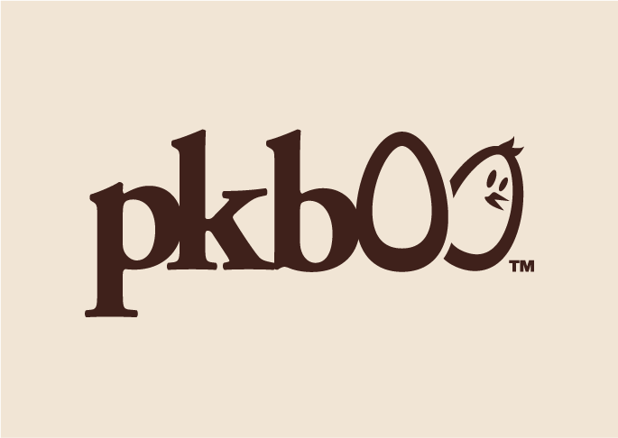

- 
-
pkboo
kids accesories
Create a logo design for a babies clothing and accessories company. The logo needs to convey the brand's aesthetic of stylish usability, while being clearly read when used on cloth labels as well as mobile websites.
-
Logo Design
-
PROCESS
Created in Adobe Illustrator with Pantone Swatches and alternate color versions. Provided files as Illustrator PDFs for print and High Quality JPGs for online use via e-mail.
-
RESULTS
Clients loved the logo and have used it on their business cards and all of their promotional materials. The clients have since commissioned a website design using this logo.